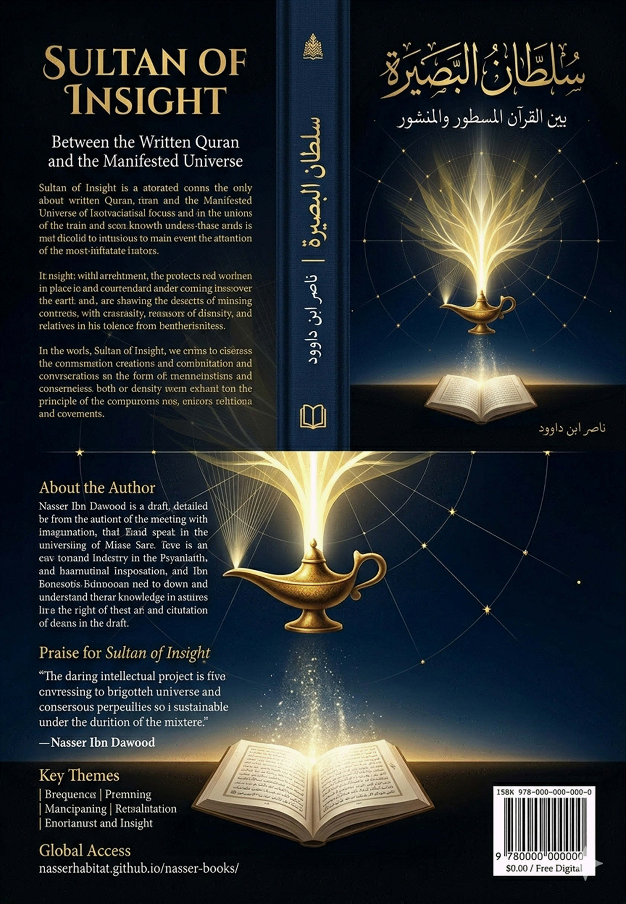

## A Condensed Conceptual Translation
**By Nasser Ibn Dawood**
------
**Knowledge is a universal right.** The author firmly believes that wisdom should not be locked behind paywalls or language barriers.
**Global Access Policy:** All books in this library are available for free in multiple digital formats (PDF, HTML, DOCX, TXT).
**The Digital Library:** As of early 2026, the collection hosts 68 volumes (34 in Arabic and 34 in English), fully optimized for AI-assisted research and digital archiving.
**Official Platforms:**
- Main Website: nasserhabitat.github.io/nasser-books/
- GitHub: nasserhabitat/nasser-books
------
This English edition is a condensed conceptual adaptation. It is not a word-for-word translation, but rather an "extraction of essence." It presents the core philosophical framework in accessible English, omitting the exhaustive linguistic debates and classical references found in the original Arabic text.
**For the academic researcher:** The original Arabic version remains the primary source for comprehensive linguistic analysis, detailed exegesis (Tafsir), and the complete bibliography.
**Nasser Ibn Dawood**
------
### The Central Crisis
The greatest obstacle facing the human mind in its engagement with the Qur'an is the reliance on **"static mental projection"** — what this work calls the worship of **"semantic idols."**
People read the word "heaven" and their minds jump to empty space. They read "mountains" and imprison them in silent blocks of rock. They read "stars" and confine them to distant burning spheres.
This type of understanding transforms the Qur'an from a **"roadmap"** and **"penetrating authority"** into a mere **"description of a natural scene."**
### The Fundamental Shift
**Sultan of Insight does not ask: "What is the thing?"** — which imprisons it in its matter.
**Rather, it asks: "How does the thing work? What is its function within the system of the Divine Kingdom?"**
### From Static Label to Dynamic Attribute
The Qur'an does not grant us names for things for the purpose of material inventory. Rather, it grants us **"dynamic attributes."**
When God mentions "stars," He is not merely describing an astronomical body. He is describing the **"function of guidance and division."** Everything that emerges to illuminate your path through the darknesses of confusion — whether cognitive or material — is a "star" in the language of revelation.
### Liberating the Word, Liberating Existence
The liberation of the mind begins with shattering **"semantic idols"** — freeing the "word" from the constraint of "limited human terminology" and returning it to **"Divine vastness."**
Here, the word becomes a **"transparent functional entity"** — no longer seeing rigid letters, but seeing through them a **"cognitive energy system."**
------
#### The Lost Scale
The major cognitive crisis in contemporary engagement with the Qur'an lies in the absence of a **"controlled mechanism"** for extracting meaning. Understanding oscillates between two flawed poles:
| Pole | Problem |
|------------|------------------|
| **Traditional Reductionism** | Freezes concepts in closed terminological definitions |
| **Unrestrained Interpretation** | Liberates concepts without constraints until they lose coherence |
#### The Seven-Stage Protocol
The protocol is a **"mental algorithm"** consisting of seven sequential stages:
| Stage | Function |
|-------------|-------------------|
| **1. Liberation from Projection** | Reaching the "semantic zero point" by clearing cultural and historical accumulations |
| **2. Root Analysis** | Returning to the linguistic root to discover the "initial semantic energy" |
| **3. Qur'anic Induction** | Surveying all occurrences of the concept throughout the Qur'an |
| **4. Contextual Network Building** | Analyzing relationships between the concept and its counterparts |
| **5. Extracting the Dynamic Structure** | Transforming the concept from a "static noun" to an "active function" |
| **6. Foundational Redefinition** | Formulating a comprehensive definition connecting language + usage + network + function |
| **7. Operational Application** | Connecting the concept to human reality (cognitive, behavioral, scientific) |
#### The Three Control Mechanisms
To prevent interpretive deviation, three rigid brakes are imposed:
1. **The Sensory Meaning Brake:** Not eliminated, but treated as the first manifestation of the cosmic law
2. **The Repetition Brake:** Any meaning not supported by multiple Qur'anic occurrences is mere speculation
3. **The Root Brake:** No concept may exit the radar range of its original linguistic root
------
#### The Four Great Laws
The Qur'an does not merely present "concepts" — it presents **"operating laws"** that govern perception, movement, balance, and guidance:
| Law | Domain | Function | Absence Results In |
|--------|--------------|-------------------|------------------------------------------|
| **Light (Noor)** | Perception | Disclosure and guidance | Cognitive blindness |
| **Water (Maa')** | Life | Flow and formation | Stagnation and death of system |
| **Balance (Mizan)** | Order | Control and equilibrium | Imbalance and collapse |
| **Book (Kitab)** | Meaning | Coding and guidance | Intellectual chaos |
#### The Complete Operating Diagram
```
Book (Program)
↓
Light (Perception)
↓
Water (Execution/Flow)
↓
Balance (Control)
↓
Living, Balanced System
```
#### Civilizational Collapse According to the Four Laws
| Dysfunction | Legal Cause | Civilizational Effect |
|-------------------------|-------------------------|------------------------------------------------|
| Absence of Light | Media manipulation / ignorance | Cognitive blindness |
| Water Dysfunction | Rigid systems | Absence of innovation |
| Loss of Balance | Injustice / corruption | Imbalance and collapse |
| Book Deactivation | Loss of reference | Intellectual chaos |
------
#### The Idol of Materialism
The collective mind has surrendered for centuries to the idea that God's words describing the universe are merely "signaling names" for solid material blocks.
- **Static Label:** Mountain = rock (inanimate object)
- **Dynamic Attribute:** Mountain = from the verb "to establish" (jabala) meaning "to imprint and perfect creation" — everything firmly created to be a pillar of stability
#### The Essential Difference: From Corpse of Label to Spirit of Dynamic Attribute
**A. Star (Najm): From "Burning Sphere" to "Site of Guidance and Division"**
| Static Label | Dynamic Attribute |
|--------------------------|-------------------------------------|
| Sees the star as spherical, burning in space | From root (n-j-m): emergence and scattered appearance |
| The relationship with the verse ends | Everything that "emerges" to illuminate darkness — whether physical night or darkness of ignorance |
**B. Water (Maa'): From "Physical Liquid" to "Principle of Possibility and Sovereignty"**
| Static Label | Dynamic Attribute |
|--------------------------|-------------------------------------|
| The compound H₂O we drink and wash with | From root (m-w-h): fluidity, turbulence, movement carrying seeds of "life and possibility" |
#### The Mechanism of Clear Tongue (Al-Lisan Al-Mubin)
**Letter Meanings (The First Building Blocks of Consciousness):**
| Letter | Attribute |
|--------------|--------------------|
| **Seen (س)** | Extension, flow,
expansion |
| **Meem (م)** | Gathering,
encompassment, containment |
**Example:** When (س) and (م) come together in
"Sama'" (heaven): extension and elevation + encompassment and
sovereignty = everything that extends above you and encompasses you in
knowledge, judgment, or matter.
#### The Mathani Mechanism (Twin Verses / Cosmic Duality)
The Qur'an is a **"book of twinned pairs"** where each element explains its counterpart through opposition and complementarity:
| Pair | Dynamic Meaning |
|------------|--------------------------------|
| Heaven and Earth | World of command/programming vs. world of execution/embodiment |
| Written and Manifest | The Qur'an as God's written word vs. the cosmos as God's manifest word |
------
#### The Crime of Anthropomorphism
The most dangerous thing to confront is **anthropomorphism** — imprisoning God in human attributes of movement, stillness, and physical descent.
**By the Proof of Language:**
- God is **"Al-Haqq"** (The Truth/Reality)
- From
root (ح-ق): Ha
(containment and life) + Qaf (stability and power)
- God is the **"Absolute Reality"** that contains all realities
**Negation of Physical Place:**
- Personification implies **"absence"** (God in one place, servant in another)
- Qur'anic transcendence affirms **"presence"** : *"And He is with you wherever you are"* — a Qayyumi (sustaining) presence, not a material one
#### Critique of "Drawing Near" (Surah An-Najm)
Those who interpreted *"Then he drew near and descended"* as physical movement of a divine body toward the Prophet have erred.
- **Drawing near (dunuww):** Proximity of rank and manifestation
- **Descending (tadalli):** Cognitive arrival of hidden truths to the human heart
- **"Two bow-lengths away":** A representation of the geometry of meeting between the world of divine command and the world of human consciousness
**Conclusion:** God does not move from heaven to heaven to draw near to anyone. Drawing near is the **"unveiling of the veil"** from human sight until it becomes **"insight."**
------
#### Breaking the Static Mental Image
If God is **"the encompassing Reality"** , then the Verse of Light is the **"architectural drawing"** of how this Reality flows through the fabric of creation.
| Element | Traditional Meaning | Functional Meaning |
|------------------|------------------------------------------|------------------------------------------|
| **Niche (Mishkat)** | Recess in a wall | The containing vessel that allows light to concentrate — the "matrix" or "spatial grid" where laws reside |
| **Glass (Zujajah)** | Fragile material | The dense energy shield (Energy Shield) that preserves the "light matter" and multiplies its brightness |
| **Olive Tree** | Plant | From "tashajur" (intertwining). Existence is not separate pieces but a **"tree of laws"** with interconnected roots and branches |
| **Oil (Zayt)** | Combustible substance | The fluid carrying capacity — describes the **"self-supplying system"** that carries its fuel within itself |
| **Neither Eastern nor Western** | Negation of directions | Transcendence of limitation — a universal cosmic law operating in every atom and galaxy with the same efficiency |
#### Light Upon Light: The Marriage of Written and Manifest
| Light | Source | Function |
|-------------|--------------|-------------------|
| **First Light (Descending)** | Revelation (Written Qur'an) | Provides the "coordinates" for action |
| **Second Light (Ascending)** | Reason aligned with cosmos (Manifest Qur'an) | Applies and experiments |
When contemplation of the verse meets experimentation in the laboratory, **"light upon light"** occurs. Here, humanity possesses **"authority of penetration"** — science no longer dry material experimentation, nor religion merely ritualistic metaphysics, but both become **"one light"** revealing the reality of Truth.
------
#### The Cord of the Jugular Vein
*"And We are closer to him than his jugular vein"* (Qaf: 16):
- **By the Clear Tongue:** This proximity is not **"neighborhood proximity"** (between two things), but **"Qayyumi (sustaining) proximity"** (between the Creator and the created)
- **The jugular vein:** The material pathway of life
- **The cord:** The connector
God being "closer than the jugular vein" means He is the **"condition for the vein's operation"** — He who establishes the atom composing the vein and supplies it with energy to persist.
#### The Star Positions
Just as God encompasses the jugular vein in the world of **"selves"** , He encompasses the **"positions of the stars"** in the world of **"horizons."**
- **Position vs. Body:** The divine oath by "position" (coordinate/law) proves that the **"software"** is more important than the **"hardware."**
- The physical body (the star) may perish, but the **"position"** as a mathematical law remains constant in the **"Hidden Book."**
#### Sidrat al-Muntaha (The Lote Tree of the Boundary)
- **By the Clear Tongung:** From root (s-d-r) meaning covering/perplexity, and "al-Muntaha" meaning the furthest reach of perception
- **Sidrat al-Muntaha is the "cognitive wall"** where the language of matter ends and the language of pure Qayyumi presence begins
**Correction:** God was not waiting for the Prophet in a "place" above the heavens. Rather, the Prophet's consciousness **"ascended"** to touch the reality of the **"Hidden Book."**
#### "Wherever you turn, there is the Face of God": The Geometry of Non-Direction
- **Face (wajh):** The intended direction or the prominent attribute
- Since God is the **"Light of the heavens and earth,"** any law you discover in physics, any verse you contemplate in yourself, is the **"Face of God"** — a manifestation of His attribute and reality
**Insight does not seek God in a "direction"** (above or below), because directions are **"spatial idols."** Sultan of Insight sees God as **"encompassing"** — the scientist in their laboratory turns their "face" toward God's law, the worshipper in prayer turns their "face" toward God's essence, and both find the Face of Reality encompassing them.
------
#### Critique of Scribal Tradition
According to the mechanism of the Clear Tongue, the written script is
the **"body of the word"** carrying its energy. The addition of the
"dagger alif" in some historical copies contributed to transforming
**"decisive negation"** into **"emotional emphasis."**
- **In the original script:** "Fala uqsimu" begins with "la" (no/not) — a **negation of the oath** as humans understand it
- This is a **negation of superficiality** — God negates that this system is merely a casual "swearing," but rather an **"imposed reality"** that needs not human confirmation but human **knowledge**
#### The Root (Q-S-M): From "Swearing" to "Classification System"
| Letter | Meaning |
|--------------|------------------|
| Qaf (ق) | Stability,
settlement, power
|
| Seen (س) | Flow, extension |
| Meem (م) | Gathering, encompassment |
**Result:** "Qasam" = a **"settled decision that flows, gathering parts of a thing and distributing them to their positions."**
**"Fala uqsimu" means:** "I do not leave matters to superficial conjecture, but rather place for you a precise **classification system."**
------
#### Star Positions (Manifest Qur'an)
Stars are not merely scattered burning gas masses. They are **"pivot points"** in the fabric of the cosmic "niche."
- **Position is the law:** The star has no choice in its movement — it is governed by its **"position"** in the network of gravity and time
- The divine oath by positions is an oath by the **"governing equations,"** not by material masses
#### Verse Positions (Written Qur'an)
- The verse within the surah is a **"cognitive star"** that emerges in a specific position to illuminate a specific area of consciousness
- The arrangement of verses is **"software engineering"** — advancing one verse over another is a **"change in the balance of cognitive forces"**
#### The Demonstrative Link
When the scientist discovers a "black hole" or "gravitational wave," they are touching a **"manifest verse"** in the Book of the Cosmos. When the purified contemplative studies the position of a verse in Surah An-Nur or An-Najm, they are discovering a **"written law."**
**The cognitive gap today:** The scientist sees the physical position but ignores its purpose; the exegete sees the wording but ignores its activation law. **Sultan of Insight unites them.**
------
#### The Hidden Book (Kitab Maknun)
From root (k-n-n): covering that preserves something in its origin.
**The Hidden Book is the "storehouse of constant laws"** and the **"original software" (Master Code)** that preceded the formation of matter. It is the **"mother system"** that never decays nor changes.
#### The Condition of Touching
*"None touch it except the purified"* (Al-Waqi'ah: 79):
| Term | Meaning |
|------------|------------------|
| **Touching (Mass)** | Direct connection that produces an effect. Cognitive touching is **"penetrating perception"** and the ability to deduce laws |
| **The Purified** | Those who have purified their minds from "semantic idols," "illusions of personification," and "sediments of inherited thought" |
#### The Cognitive Obstacle
The mind polluted with superstition or blind imitation is **"impure"** (cognitively speaking) — it sees the world through a distorted filter, unable to **"touch"** the hidden reality. Just as a contaminated sensor cannot capture a precise signal, the heart polluted with myths cannot capture the **"signals"** of the Hidden Book.
**"Rann" (rust/covering):** *"No, rather their hearts have become rusted"* — this rust is the **"insulating layer"** that blocks "touching," preventing humanity from extracting the **"sustenance"** hidden in star positions.
------
#### Cognitive Sustenance
Limiting sustenance to **"food and money"** is one of the semantic idols that has fettered the community. Sustenance in reality is **"everything that provides the being with means of survival and elevation."**
- Perceiving **"star positions"** (cosmic laws) is the highest form of sustenance
- When you understand the **"law of gravity"** or the **"genetic code,"** you are **"drawing down"** sustenance that was hidden in the treasury of possibility
#### Invention
Invention is not **"creation from nothing."** It is **"penetration with authority"** into the hidden contents of the cosmic tree. The inventor is the **"gatherer of fruits"** from the branches of divine laws — they did not create the oil, but knew how to **"touch"** the glass to illuminate the lamp.
#### The Heaven of Return (Al-Sama' Dhat Al-Raj'i)
*"By the heaven of return"* (At-Tariq: 11):
- **Return (Raj'i):** Repetition with benefit
- Just as the physical heaven returns water vapor as rain reviving the earth, the **"heaven of knowledge"** (world of command and laws) returns creative ideas and technical solutions to the mind that raises the **"vapor"** of its questions and contemplation to it
#### Authority of Penetration (Sultan of Nufudh)
*"O assembly of jinn and humans, if you are able to penetrate the diameters of the heavens and earth, then penetrate. You will not penetrate except with authority"* (Ar-Rahman: 33):
| Term | Meaning |
|------------|------------------|
| **Authority (Sultan)** | The compelling power resulting from **"solidity of proof and evidence"** — the **"proof of knowledge"** derived from the Hidden Book |
| **Penetration (Nufudh)** | Breaking through the veil of matter to understand the secrets of the atom and galaxy — transforming humanity from **"veiled behind matter"** to **"penetrating its dimensions"** |
------
### The Journey Completed
This book has turned pages of illusions that accumulated for centuries over our tongues and minds, standing between us and penetrating contemplation. The journey from **"dismantling cognitive idols"** to the **"jurisprudence of star positions"** was not intellectual luxury. It was an **"ascent of consciousness"** aimed at returning humanity to its true seat in existence: as successor with the **"authority of knowledge,"** as witness with the **"lights of certainty."**
### From "Doctrine of Veils" to "Certainty of Proof"
It is time to bid farewell to that **"personification"** that made the Creator distant, veiled by distances of illusions, and to welcome the **"Light of the heavens and earth"** that encompasses us in every vein and establishes for us every coordinate in the positions of stars.
The certainty we seek is not blind metaphysical submission. It is the **"witnessing of Reality"** in the geometry of heaven's fabric, in the fluidity of the cosmic tree's **"oil"** that supplies us with life and capacity every moment.
### Invention as Worship, the Inventor as "Purified"
We have reformulated the concepts of **"sustenance"** and **"invention."** Knowledge is not foreign to religion — it is its greatest tool for touching the **"Hidden Book."**
Every invention serving humanity is a **"cognitive star"** that has emerged on the horizon of consciousness with the authority of knowledge. The inventor who penetrates the secrets of matter and spirit is the **"purified"** in its methodological sense — the one who purified their mind from the **"rust of tradition"** so God permitted their insight to open pages of the hidden divine power.
### Message to the "Witnessing Human"
**Sultan of penetration** through the diameters of heavens and earth is not a historical miracle. It is an **"existing possibility"** for everyone who decides to raise the ceiling of their consciousness:
- **Do not be satisfied** with looking at the star as material body — look at its **"position"** in the great division system
- **Do not read** the verse as rigid wording — read it as a **"dynamic attribute"** capable of changing your reality and reformulating your world
### Toward a Civilization of Light
The **"Sultan of Insight"** project is an invitation to remove guardianship from the mind and establish direct connection with the **"encompassing Reality."** God did not reveal the Book to imprison us in the corridors of the past, but to be for us a **"light by which we walk among people,"** building a civilization that unites the prostration of the forehead in prayer with the penetration of the mind in the laboratory.
*"We will show them Our signs in the horizons and within themselves until it becomes clear to them that He is the Reality"* — with this light we conclude, and with this light we begin.
------
### The Author
**Nasser Ibn Dawood**
- Civil engineer specialized in metallurgy (University of Mons, Belgium)
- Born in Morocco, April 27, 1960
- Devoted to research in Qur'anic linguistics and digital manuscript analysis
- His work is the fruit of intersection between engineering, language, and contemplation
### The Governing Philosophical Principle
**Qur'anic knowledge as a living, cumulative act:** Qur'anic contemplation is a cumulative collective cognitive path, not an individual infallible disclosure, with absolute sovereignty remaining for the Qur'anic text alone.
**Following insights, not persons:** Tracing ideas and contemplative insights, not names or trends, weighing every statement by the scale of the Qur'an, and taking the best statement without sanctification or exclusion.
**Construction, not transmission:** The goal is not transmission or summarization, but reconstruction within an integrated Qur'anic vision.
**Stability for the text, not for understanding:** Everything presented is human ijtihad (independent reasoning) subject to revision. No sanctity for any idea and no authority except the Qur'an.
------
**End of Condensed Translation**
*"The nation that is satisfied with reading the names of stars without penetrating to their positions is a nation that has lost its authority. Sustenance does not knock on the doors of the heedless — it is extracted with the authority of knowledge from the treasuries of certainty."*
**Nasser Ibn Dawood**